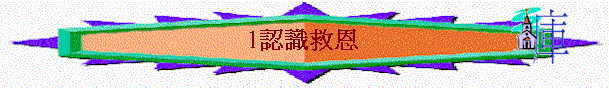
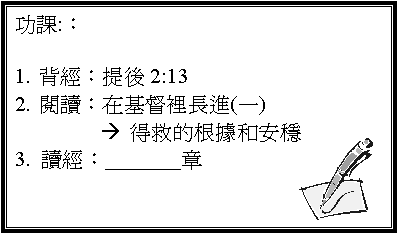

引言
記不記得自己在何時信耶穌？
當初為何相信？
經文 約3:16
一．
『神』
1.
你未信前對神有甚麼觀念？ 你認為世上有沒有神？
是怎樣的神？
2.
你現在對『神』有甚麼看法？ 祂是誰？ 是否只得一位？
其他宗教的神又是甚麼東西？
你所認識的神是怎樣的神？(參看提前2:5)
二．
『世人』
1.
你認為現今世人最難面對、解決的問題是甚麼？（羅7:18-19、24）
2.
你認為你未信前可用甚麼方法解決
三．
『神愛世人』
1.
神是否不愛人，任人死亡，受審判呢？
2.
祂如何愛人？
3.
耶穌做了甚麼以致可以解決以上問題？
四．
『叫一切信祂的，不致滅亡，反得永生』
1.
耶穌解決了人的問題，但人怎可以得著耶穌拯救／救恩，以至不滅亡？
2.
若一個人生長在貧窮地方，他沒返過教會，沒看聖經．並一生殺人放火，壞事做盡，他臨死前信了主，但沒為主作過甚麼，他就死了，他可否得救而不滅亡？
3.
是否一切單信主的人，真可以不滅亡？
4.
信了主後，可『反得永生』，何謂永生，得了會否又失去？
會否因為我們表現不好而被神收回？何以見得？（來7:25、提後2:13）
5.
此外，羅8:16所述的怎樣印證我們是神的兒女及已是得救的人？ 你有沒有經歷過信耶穌後的平安喜樂及聖靈微小的聲音？
6.
你是否100%肯定自己信耶穌？
你認為自己有永生嗎？
7. 若有人信了，他不肯定，你用什麼說話幫他肯定呢？
